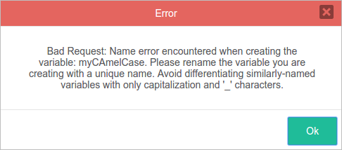
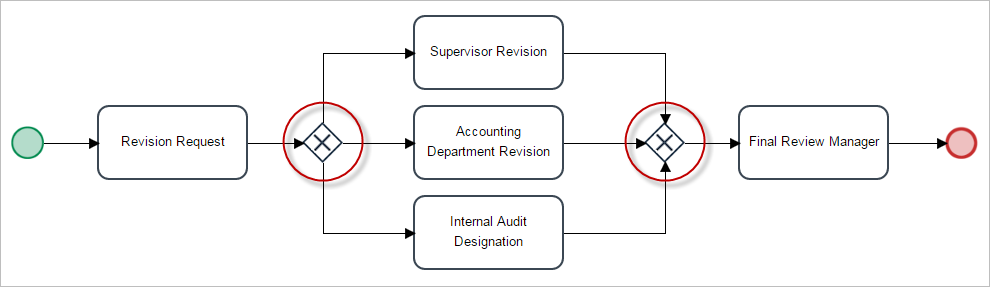
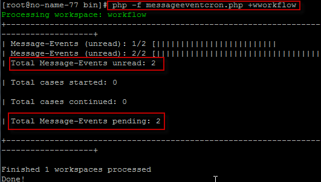
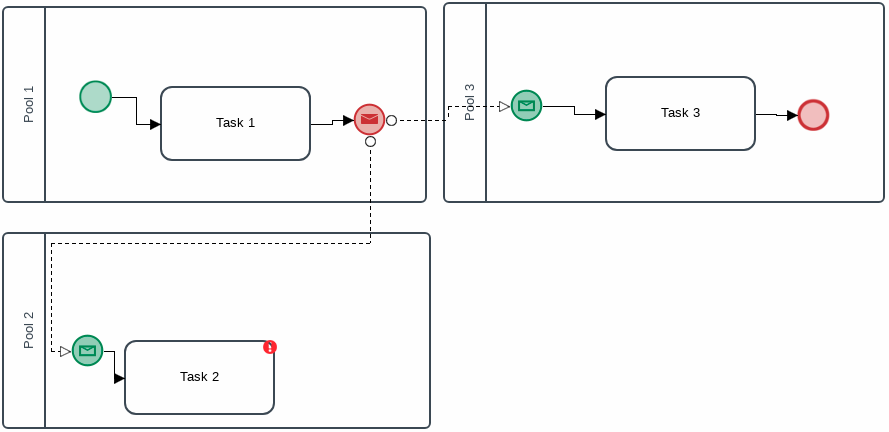

Please rate how useful you found this document:
Process Development
Architect
- All architects should have broad knowledge of BPM and BPMN 2.0.
- When designing processes, it is recommended to work using an established methodology for process designing. For example, it is recommended to work first on a SOW document.
- All processes should be designed first in a development environment. If making changes to an already existing process, it is strongly recommended to not deploy those changes to processes which are live in production before completing all pending cases. Otherwise undesired and random errors may occur in those in-progress cases.
- Refer to the ProcessMaker wiki page to start learning how to properly design processes in ProcessMaker.
-
In the designer menu, an item needs to be selected first to use the Edit, Status and Delete options.

- The Process Map is not collaborative, so please be careful when more than one person works on the design of a process.
- Processes should have around ten objects in the design. The Process Map's performance may slow down when there are many objects to load on the Process Map, and the objects may not all fit on the map. When there are many objects on the Process Map, it is recommended to use sub-processes in the design to avoid the use of multiple pages for one Process Map.
- The Process Map is not very restrictive when designing processes; therefore, it may be possible to design invalid flows that are not supported by ProcessMaker when they are executed.
- It's strongly recommended to create and design processes in one language, because ProcessMaker DOES NOT support multilingual task labels and descriptions.
- Take care when using the Redo and Undo options, especially with elements that have their own configurations. These options work only with the visual side of the elements. The elements have to be configured again when using the Undo and Redo options.
- Deleting a project will not remove its cases from the database (read more here).
- It is not recommended to design a process using different tabs or windows of the browser. ProcessMaker does not work properly when multiple browser tabs or windows are open of a process while it is being designed (read more here).
- When designing a process, it is highly recommended to assign labels to all elements so the design easy to understand by end-users.
- Note that the name of the task should not be changed when there are cases being executed in the task.If the name of the task is changed anyway, then take into account that the name of the task shown in the case lists will not be updated if a case of the process has already been started (read more here).
- DO NOT delete a task while running a case of a process, because it could cause errors in the case (read more here).
- Script tasks can not start the flow of the process (read more here).
- It is not recommended to delete a step while running cases of a process, because it can cause errors and prevent the case from being completed. To edit a process while it is being executed, make a copy of the process and edit the new version of the process (read more here).
- Avoid configuring the task incorrectly. For example, consolidated cases (using the batch routing plugin) must not be assigned in the first task of the process.
- Variable names must match the regular expression: ^[a-zA-Z_\x7f-\xff][a-zA-Z0-9_\x7f-\xff]* (read more here).
- All variables in a case are stored in the MEDIUMTEXT field of wf_<workspace>.APPLICATION.APP_DATA in the database, which holds a maximum of 16,777,213 bytes. The maximum number of characters in a string is determined by the size of that field, but can also be limited by the Size property of Textbox controls in Dynaforms and by the post_max_size setting in the php.ini configuration file (read more here).
- Use underscores to separate words with characters entirely in lower or upper case, eg: "my_variable_name" or "MY_VARIABLE_NAME".
Do NOT use camel case or '_' characters to differentiate similarly-named variables. If a variable, such as "my_variable_name", already exists and a new variable, such as "my_variable____name", "MY__VARIABLE_NAME", "MY_variable_Name", "MY_Variable_NAME", "MY_VARIABLE_NAME", is being created, an error dialog displays.

- Don't mix camel case with underscores: myVariable_name.
- Similar variable names might have conflicts when moving the data to a report table. The risk of mixing naming practices is that variables might have conflicts when moving the data to a report table. For example: MY_VARIABLE_NAME, myVariableName, MyVariableName, myVariable_name, MY_variableName, my_variable_name will be saved correctly in ProcessMaker and will keep their values independent from the other variables, but when generating a report table, they will all map to a column named MY_VARIABLE_NAME.
- Don't name a variable with "_label" at the end, since variables are automatically created in ProcessMaker using this appendix in their name. For example a variable named "MyVariable" will also include a "MyVariable_label", which stores the text of the field. For more information, read the _label Variables.
- Converging gateways receive a unique flow: they have one input flow and can have two or more outgoing flows. Diverging gateways have more than two incoming flows and a unique outgoing flow. To make more complex paths or more than one outgoing path, it is better to add activities, such as the Script Task, to the design rather than diverging gateways (read more here).
- When working with Exclusive gateways, take into consideration that the diverging and converging gateways must be the same (e.g. Exclusive - Exclusive), and the design cannot mix Exclusive with Parallel or Exclusive with Inclusive gateways. If this happens, then an error will occur when running the case (read more here ).

- Take into consideration that when working with Parallel gateways, the input and output gateway must be the same. Meaning that the diverging and converging path must use the same gateway (Parallel - Parallel) and that Parallel gateways cannot be used with Exclusive or Inclusive gateways. If this happens, then an error will occur when running the case (read more here)

- Notice that when working with Inclusive gateways, the input and output gateway must be the same. Meaning that the diverging and converging path must use the same type of gateway (Inclusive - Inclusive) and cannot mix Inclusive with Exclusive or Inclusive with Parallel. If this happens, then an error will occur when running the case (read more here).

- Make sure all conditions set in the exclusive and inclusive gateway are correct.
- Also make sure to correctly manage the variables using these typing rules for case variables.
- The ProcessMaker engine does not support the execution of a sub-process configured as "asynchronous" after a parallel gateway.
If the design of the process includes a section like the figure above, set the asynchronous process(es) and the rest of the elements in a sequential order instead of using a parallel gateway (read more here).
- Exclusive gateways must count all the variables' values. Otherwise, the routing screen uses the default flow to display the next task and user. For example, if the variables come from several threads, converging an Inclusive gateway followed by an exclusive gateway, the routing screen might miscalculate the next user until all variables required are defined. For this purpose, you should do one of the following:
- Use a dummy task for the default flow named Not yet defined. Then, the routing screen displays Next Task: Not yet defined.
- Use a Script task between the converging inclusive gateway and the exclusive gateway.
- Skip the routing screen by redirecting it and using the
PMFDerivateCase()function. - Replace the routing screen.
- In exclusive gateways when there is a yes/no conditional gateway, the trigger code structure is as follows:
@@condition == 'no' && @@completed == '0' @@condition == 'yes' && @@completed == '0' @@completed == '1' All variables used in the conditional have to be used in the trigger to enforce a correct outcome of the path in the workflow.
As a general rule, conditional gateways use nested structure as follows:if(conditional1 == true){ //option}else if(conditional2 == true){ //option}else if(conditional3 == true){ //option}else{ //option} Therefore, it is recommended to analize every gateway conditional to do not have an inconsistent gateway option. - A case can't be canceled if more than one parallel thread is being executed.
- Do not change the variables that are equal in tasks that are running in parallel threads. The last task that completes overwrites the variable value. This rule applies to all variable types.
- For message events, these events must be part of two separate processes represented by different pools in the Process Map, according to BPMN (read more here).
- Take into account that the following events will continue only after their respective cron files are executed, even if they are overdue: timer events (cron file name: timereventcron.php) and message events (cron file name: messageeventcron.php) (read more here).
- Take into account that events that are not configured correctly will not be able to continue the execution of any case or start a new case of any process. It is important to make sure that the correlation value in both processes is valid (meaning that the proper tests must be done in a development environment before publishing it in a production environment) and that the message type in both processes is also the same, because cases of processes whose events are not correctly configured can not be recovered.
For events that have not been configured correctly, the message shown when running the message event cron file for these cases is the following:
For information about troubleshooting events, go here.
-
Receive and Intermediate messages only accept a sequential correlation, NOT multiple correlations like SEND or RECEIVE signals simultaneously as shown below:

-
When working with dropdown and suggest controls, the label values must be sent in the events.
For example, if there is a suggest control with the name MsgContractCode, the label saved with the name MsgContractCode_label must be past in the events properties. - To add an existing process to a pool, do NOT create a new pool on top of the process. Instead, create the new pool in a blank area in the designer and resize it so it is big enough to encompass the entire process. Then select the entire process with the group selector tool and drag it into the pool (read more here).
- Black boxes are only available for designing in the Process Map. The ProcessMaker engine does not support this element (read more here).
- First, read about managing variables in form fields here.
- When relating variables to fields, it is highly recommended that the variable name and the control ID be the same to avoid errors and make the field easier to manage.
Textareas
- The ability to re-size textareas might not work if using IE 11 (read more here).
- The Rows property in textareas does not have any effect inside grids due to the amount of controls that grids handle at the same time, and because the look and feel of the grid would change dramatically if the Rows property were applied. Only one row is shown at a time in a grid (read more here).
Grids
- Do not forget to set the column width of the control to correctly render the columns in the field. Also, take a look at this section to see which controls are supported inside grids (read more here).
- Take care to make the correct calculations for this property. If the percentage set in the columns surpasses 100%, the last columns (the ones to the right of where 100% was surpassed) will be cut off or will not be shown in the Dynaform (read more here).
Panels
- Be careful not to leave a blank space between the size and the unit ("numberpx"). For example, if 3 px is defined, the property will not work correctly (read more here).
Links
- If inserting the JavaScript code directly into the Href property, note that single quotes must be used. This rule is not applied if the JavaScript editor of the form is used. In that case, use double quotes (read more here).
Files
- Read the considerations for file validations when running cases.
- This query only retrieves data from the files uploaded with the control. It will not show data from files uploaded using the control that are related to an input document. To view all files, remove the AND D.APP_DOC_FIELDNAME = 'fileControlID' condition in the query (read more here).
- The code method_exists(G, "getPathFromUID") checks whether the G::getPathFromUID() method exists before calling it (read more here).
- The file field does not respect the configuration made in the PATH of the input document. This will be solved in future versions of ProcessMaker (read more here).
Custom CSS
- Take care when using custom CSS files. Make sure these files only contain classes that modify the elements in the form, but not other elements in ProcessMaker.
- Input document paths should not use variables that were not yet saved. This means that these variables are not populated in the same form where files are being uploaded.
Process Design
For Tasks
Naming Variables
- The validation of the name of variables take into account the following points. The validation is in variables, creating controls, creating controls in a grid, and creating report tables.
For Gateways
Parallel Threads
The following best practices are for parallel gateways, parallel tasks and/or inclusive gateways.